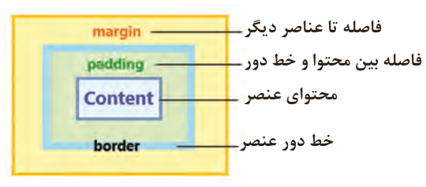

مدل جعبهای (Box Model) در CSS برای طراحی و چیدمان عناصر در صفحات وب استفاده میشود. هر عنصر HTML بهعنوان یک «جعبه» در نظر گرفته میشود که شامل چهار قسمت محتوا (content)، فضای اضافی داخل عنصر (padding)، خط دور (border) و فاصله عنصر تا عناصر مجاور (margin) است. در مثال زیر این تنظیمات قابل مشاهده و بررسی است: (شکل25) .
ویژگیهای width و height صرفاً پهنا و ارتفاع ناحیه محتوا (content) را مشخص میکنند. بنابراین مقداردهی به ویژگیهای padding، margin و border باعث افزایش ابعاد نهایی جعبه میشود. این مقادیر باید در محاسبات ابعاد جعبه لحاظ شود. برای جلوگیری از تأثیر دو ویژگی border و padding روی پهنا و ارتفاع عنصر از ویژگی box-sizing با مقدار border-box استفاده میشود. با انجام این کار، مجموع ابعاد محتوا، padding و border در راستای افقی و عمودی برابر با مقادیر width و height خواهد بود.

شکل ۲۴
صفحه ۱۲۹
در فایل index.html (کارگاه قبل) ویژگیهای مارجین و پدینگ عنصر ul را برابر صفر قرار دهید (margin:0;padding:0( و برای عنصر header مقداری پدینگ تنظیم کنید (padding:10px 20px) سپس تغییرات منو را در مرورگر بررسی کنید.
مدل نمایش (Display Model)
مدل نمایش در CSS به نحوه نمایش و رفتار عناصر در صفحه وب اشاره دارد. این مدل تعیین میکند که عناصر چگونه در کنار یکدیگر قرار بگیرند و چگونه با هم تعامل کنند. مدل نمایش توسط ویژگی display با مقادیر مختلف تعیین میشود. در ادامه به شرح مقادیر این ویژگی پرداخته میشود:
block: عناصری با ویژگی display: block به صورت بلوکی نمایش داده میشوند و فضای کامل خط را اشغال میکنند. این عناصر به طور پیشفرض در یک خط جدید شروع میشوند و امکان تعیین width و height برای آنها فراهم است.
Inline: عناصر inline مانند کلمات رفتار میکنند، یعنی عناصر پشت سر هم قرار میگیرند و خط جدید ایجاد نمیکنند. این عناصر تنها بهاندازۀ محتوای خود فضا اشغال میکنند؛ در نتیجه تعیین width و height برای آنها بی اثر است. بهعلاوه اختصاص ویژگیهای margin برای قسمتهای بالا و پایین عنصر اثرگذار نخواهد بود.
Inline-block: این حالت ترکیبی از block و inline است. عناصر inline-block میتوانند به صورت بلوکی رفتار کنند، اما درون خط جاری قرار میگیرند. این عناصر میتوانند پهنا و ارتفاع داشته باشند و به اندازه محتوای خود فضا اشغال میکنند.
جدول ۹: مقایسه عناصر Block و Inline در CSS
عناصر Inline
عناصر Block
ویژگی
در همان سطر ادامه پیدا میکنند.
همیشه در سطر جدید شروع میشوند.
شروع در سطر جدید
فقط به اندازۀ محتوای عنصر است.
حتی با تعیین پهنا، کل سطر را به خود اختصاص میدهد.
پهنا (width)
معمولاً فقط به اندازۀ محتوا است.
میتوان تنظیم کرد.
ارتفاع (height)
<span>, <a>, <b>, <i>
<div>, <p>, <h1>, <section>
نمونه عناصر
چند عنصر کنار هم قرار میگیرند.
هرکدام در خط جدا قرار میگیرند.
رفتار در کنار هم
صفحه ۱۳۰
صفحه ۱۳۱
Page 128
The Box Model
The box model (Box Model) in CSS is used to design and lay out elements in web pages. Each HTML element is treated as a «box» with four parts: the content (content), the extra space inside the element (padding), the border (border), and the distance from neighboring elements (margin). These settings can be seen and examined in the example below: (Figure 25).
The width and height properties set only the width and height of the content area (content). So giving values to padding, margin, and border makes the final box bigger, and these values must be included when working out the box's size. To stop border and padding from affecting an element's width and height, the box-sizing property is used with the value border-box. Then the content, padding, and border together equal the width and height values, horizontally and vertically.
Figure 24
Page 129
In the file index.html (from the previous workshop), set the margin and padding properties of the ul element to zero (margin:0;padding:0), and set some padding for the header element (padding:10px 20px); then check the changes of the menu in the browser.
The Display Model
The display model in CSS is about how elements are shown and behave in a web page. It decides how elements sit next to each other and interact. The display model is set with the display property and its different values, described below:
block: elements with display: block are shown as blocks and take up the full width of the line. By default they start on a new line, and you can set their width and height.
Inline: inline elements behave like words: they sit one after another and do not start a new line. They take up only as much space as their content, so setting width and height has no effect on them. Top and bottom margins do not take effect either.
Inline-block: a mix of block and inline. inline-block elements can behave like blocks but sit within the current line. They can have a width and height and take up as much space as their content.
Table 9: Comparing Block and Inline elements in CSS